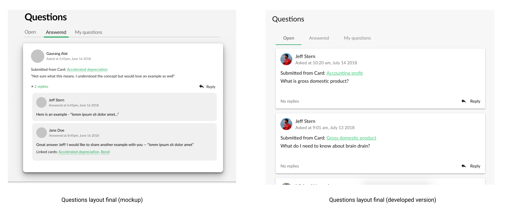

Wonderus- Knowledge Management Software for Teams
Designing user flows and interfaces to reduce friction and deliver coherent user experience

- Task: Design the end-to-end user experience for Wonderus
- What I did: Competitive analysis, sketching, user flows, wireframing, hi-fi prototyping
*Freelance project, May 2018-current
BACKGROUND
An alumnus from my school at the University of Michigan reached out on the current students email listserv, back in May, asking for design help on his side project. He had a very rough PoC developed but he wanted a designer to redesign some existing screens besides designing new screens from scratch. Eager to take up the opportunity to gain some experience and put my design skills to use, I wrote him a compelling email. After a couple of emails and a quick chat, I was given a short assignment. By probing the problem space and understanding the client's vision, I delivered what the client was looking for, and more, and was asked to jump on board as the sole designer for this project.
THE PROCESS
Since I am working remotely, I have to interact with my client through calls/ text messages and comments left on Figma files. While there is no workaround this, I try to make the most of it through proper and regular communication. The client informs me about his vision (functionality, ideal UI, feature set) and occasionally provides a sketch to convey what he wants.
Through follow-up questions I try to obtain a clear picture before I start synthesizing information and designing the user flows/ UIs. I explore multiple variations of a design, tweaking minor elements while making sure the functionality isn't affected. When I am in doubt, I refer to best practices in the industry/ Material Design framework and checking out well designed products. Feedback from the client is used in subsequent iterations of the selected design. A final round of design iteration is sometimes needed after inspecting the UI implemented by the developer.
JOURNEY OF THE CARD'S DESIGN
SIGN UP/ LOG IN
The goal was to have a smooth flow to get new users registered as fast a possible with the least amount of friction. This meant using good signifiers, clear copy and providing proper feedback to users. I looked at a few services to see good practices for managing the process from invite to registration.
The Create Account page needed to nudge users into the registration process without overwhelming them with a lot of information/ text input fields.
QUESTIONS LIST
This was a core feature of Wonderus, the ability to ask questions. The client wanted to see an interface where users can view their own /others' questions and answer them.
I started off with two explorations — table (a list of entries) and a list of cards. While teh table layout showed the maximum number of questions, the card one offered intuitive actions. The client preferred the card layout so I iterated on it incorporating the feedback.
The next task was to design an interface for adding replies to a question (answering teh question). Additional functionality needed was to link a knowledge card, edit the reference card, create a new card and link it.

DASHBOARD
The dashboard is the primary page through which users can access knowledge cards, view or ask questions, add card or check collections. The client envisioned this as a feed, where activity such as creation of card, asking/ answering questions will appear on the top. I was sent a wireframe and informed of the features that were needed.

I went through multiple iterations, focusing mainly on the placement of the CTA buttons as they were an important component of the interface. I had to also find and use appropriate icons for different pages (Home, Cards, Cards Collections). I saw a good opportunity to notify users of the Slack integration available and I decided to use a dialog box that users could dismiss anytime, thus giving users control and freedom while informing them of the functionality. The dashboard has still a lot of potential in terms of design, and the work hasn't been completed yet.

REFLECTING ON THE PROJECT
Working remotely and as the sole designer, this project has taught me a lot of things. I got not only an opportunity to use my design knowledge, but also an opportunity to fail and learn from my mistakes thereby building up my confidence and improving my design skills. I have also learnt how to be more bold in my design explorations, and own my work. I really enjoy working in a fast-paced team with motivated people so this gig has been a blessing!